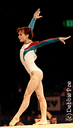

Roza Galieva (USSR/UZB/RUS)
1996 European B Champion
|

Medal Total
- Olympic Games: 1 Gold, 1
Silver
- World Championships: 1
Gold
- European Championships: 1
Gold, 1 Silver
|
Roza was born on April 28, 1977
in Almalyk. She began gymnastics in 1983, and her favorite event was
FX. Roza competed for the USSR/CIS until mid 1992, then for UZB until
1994. She became a Russian citizen in late 1995 and represented her new
country at the 1996 Olympic Games.
Competition Results
- 1991
- Blume Memorial: 1st UB, 1st B, 1st FX, 2nd
AA
- GER-USSR Jr. Dual Meet: 1st Team, 4th AA
- Jr. European Championships: 1st B, 12th AA
- USSR Championships: 1st FX,
2nd V
- World Championships: 1st
Team, 9th AA (prelims)
World Stars: 5th AA, 8th UB
-
- 1992
- CIS Championships: 2nd AA
CIS Cup: 4th Team, 10th AA
- Cottbus International: 1st B, 2nd AA, 2nd
UB, 2nd FX
- Olympic Games: 1st Team,
8th AA (prelims)
- World Championships: 2nd UB
(prelims), 3rd B (prelims), 4th FX (prelims)
World Stars: 4th AA, 1st B, 2nd FX
-
- 1993
- Birmingham Classic: 2nd AA
- Cottbus International: 1st V, 1st UB, 2nd
B, 4th AA
- Kosice International: 1st FX, 4th AA
Taipei International: 1st AA, 1st V, 1st UB
- Trophee Massilia: 4th AA
- World Championships: 6th AA
-
- 1994
- Cottbus
International: 3rd V, 3rd UB, 5th FX
Gymnix International: 4th AA
-
- 1995
- Pre-Olympics: 2nd AA, 1st
FX, 2nd UB, 6th V
RUS Championships: 1st V, 7th FX
- Subway World Challenge: 7th AA
-
- 1996
- Cottbus International: 2nd B, 3rd V, 6th UB
- DTB Cup: 5th B, 8th UB (qualifying round),
10th FX (qualifying round)
- European Championships: 1st B, 2nd
Team, 5th FX
- French International: 1st V, 4th B
- Grand Prix of Rome: 5th AA
- ITA-BLR-ROM-RUS Meet: 1st AA
- Olympic Games: 2nd Team,
4th V, 7th AA, 7th B
- Russian Championships: 1st AA,
1st UB, 1st B, 1st FX, 2nd V
Russian Federation Cup: 1st AA
- Trophee Massilia: 2nd Team, 11th AA
- World Championships: 8th FX
World Stars: 1st AA, 1st V, 1st B, 1st FX, 8th UB
-
- 1997
- University Games: 1st Team, 2nd B
-
This page was last updated on January 03, 2007.
© Gymn Forum
-